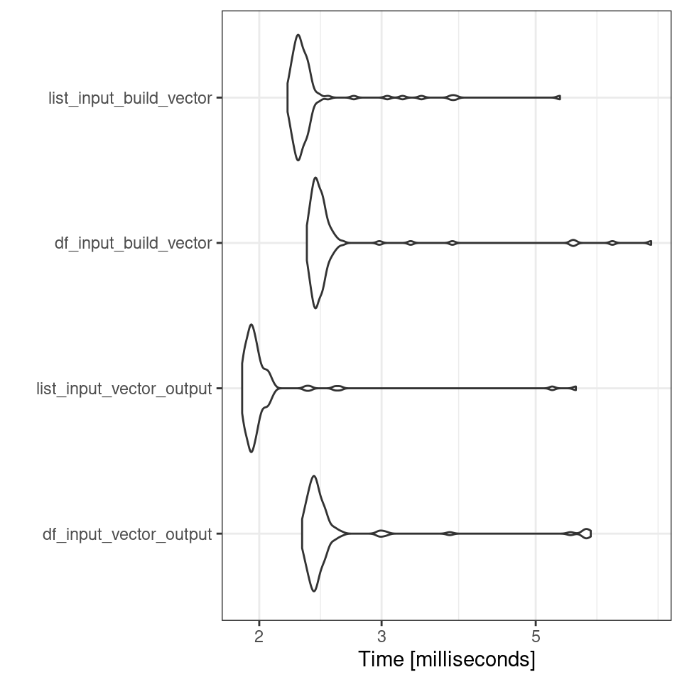

Chapter 15 Loops
Loops are one of the staples of all programming languages, not just R, and can be a powerful tool; though we will see later there are a suite of alternative to loops in R.
For loops make it possible to repeat a set of instructions i times. For example, try the following:
## [1] "hello"
## [1] "hello"
## [1] "hello"
## [1] "hello"
## [1] "hello"Or
## [1] 2
## [1] 3
## [1] 4This is a dynamic piece of code where an index 'i' is iteratively replaced by each value in the vector 1:5.
Let's break it down. Since the first value in our sequence (1:3) is 1, the loop begins by substituting 'i' with 1 and executing everything within the curly braces {1+1}. Loops conventionally use 'i' as the counter, which is short for iteration. However, you are free to use any variable name you prefer:
so the first loop is essentially:
i <- 1 + 1
print(i)
Once this first iteration is complete, it loops back to the beginning and replaces i with the next value in our 1:3 sequence (2 in this case):
i <- 2 + 1
print(i)
This process is then repeated until the loop reaches the final value in the sequence
for (i in 1:3) { # the SEQUENCE is defined (numbers 1 to 5) and loop is opened with "{"
print(i + 1) # The OPERATIONS (add 1 to each sequence number and print)
} # The loop is closed with "}"
15.1 Functions in for loops
Whilst above we have been using simple addition in the body of the loop, you can also combine loops with functions.
# Define a function to calculate the square of a number
square <- function(x) {
return(x * x)
}
# Use a for loop to calculate and print the squares of numbers from 1 to 5
for (num in 1:5) { # Here I have replace i with num
result <- square(num)
cat("The square of", num, "is", result, "\n")
}## The square of 1 is 1
## The square of 2 is 4
## The square of 3 is 9
## The square of 4 is 16
## The square of 5 is 2515.2 For loops in dataframes
Let's create a somewhat more intricate function. Initially, we generate a new tibble by creating four vectors, each consisting of 10 randomly generated numbers. These numbers are designed to be approximately centered around a mean of 0 with a standard deviation of 1. Afterward, we combine these vectors to form the final tibble.
set.seed(1234)
# a simple tibble
df <- tibble(
a = rnorm(10),
b = rnorm(10),
c = rnorm(10),
d = rnorm(10),
e = rnorm(10),
f = rnorm(10),
g = rnorm(10),
h = rnorm(10),
)
df| a | b | c | d | e | f | g | h |
|---|---|---|---|---|---|---|---|
| -1.2070657 | -0.4771927 | 0.1340882 | 1.1022975 | 1.4494963 | -1.8060313 | 0.6565885 | 0.0068928 |
| 0.2774292 | -0.9983864 | -0.4906859 | -0.4755931 | -1.0686427 | -0.5820759 | 2.5489911 | -0.4554687 |
| 1.0844412 | -0.7762539 | -0.4405479 | -0.7094400 | -0.8553646 | -1.1088896 | -0.0347604 | -0.3665239 |
| -2.3456977 | 0.0644588 | 0.4595894 | -0.5012581 | -0.2806230 | -1.0149620 | -0.6696336 | 0.6482866 |
| 0.4291247 | 0.9594941 | -0.6937202 | -1.6290935 | -0.9943401 | -0.1623095 | -0.0076048 | 2.0702709 |
| 0.5060559 | -0.1102855 | -1.4482049 | -1.1676193 | -0.9685143 | 0.5630558 | 1.7770844 | -0.1533984 |
| -0.5747400 | -0.5110095 | 0.5747557 | -2.1800396 | -1.1073182 | 1.6478175 | -1.1386077 | -1.3907009 |
| -0.5466319 | -0.9111954 | -1.0236557 | -1.3409932 | -1.2519859 | -0.7733534 | 1.3678272 | -0.7235818 |
| -0.5644520 | -0.8371717 | -0.0151383 | -0.2942939 | -0.5238281 | 1.6059096 | 1.3295648 | 0.2582618 |
| -0.8900378 | 2.4158352 | -0.9359486 | -0.4658975 | -0.4968500 | -1.1578085 | 0.3364728 | -0.3170591 |
Each vector is randomly generated so the actual averages will be slightly different, we can test that here:
## [1] -0.3831574
## [1] -0.1181707
## [1] -0.3879468
## [1] -0.7661931So the above code works, but it is repetitive, applying the same function again and again.
Below we have a simple for loop:
#1. Having a predefined empty vector to receive the values is good practice, we will see why a bit later
output <- vector("double", ncol(df)) # this will have four empty elements the same as the number of columns for the dataframe. The vector is set to receive numeric dataNow we run our loop:
for (i in 1:ncol(df)) { # 2. sequence - determines what to loop over
output[[i]] <- mean(df[[i]]) # 3. body - each time the loop runs it allocates a value to output,
}
output## [1] -0.38315741 -0.11817071 -0.38794682 -0.76619306 -0.60979706 -0.27886474
## [7] 0.61659223 -0.04230209Each time the mean is calculate for one column in df this is then stored as an element in the previously empty output vector.
for() loops are very useful for quickly iterating over a list, but because R prefers to store everything as a new object with each loop iteration, loops can become quite slow if they are complex, or running many processes and many iterations.
15.3 Speed
15.3.1 Initialise objects
Pre-allocating the output with the appropriate length before the loop avoids reallocation of memory inside the loop, which can be inefficient for large data. For example:
output2 <- NULL
microbenchmark::microbenchmark(
for (i in 1:ncol(df)){
output2 <- c(output2, mean(df[[i]])) # each new calculation is concatenated onto the end of the growing vector
}
)
output2 # note because we did not predefine our vector length it continues to grow! Depending on your own computer processing power you may get different results - but here
| Built inside loop | pre-initialised vector | |
|---|---|---|
| min | 2.38ms | 2.29ms |
| max | 19.19ms | 12.64ms |
| mean | 3.4ms | 2.55 ms |
| median | 2.71ms | 2.42ms |
15.3.2 simple datatypes
df_list <- as.list(df)
microbenchmark::microbenchmark( # check average processing time
for (i in length(df_list)) {
output[[i]] <- mean(df_list[[i]])
}
)Depending on your own computer processing power you may get different results - but here
| List | Tibble | |
|---|---|---|
| min | 1.92ms | 2.38ms |
| max | 12.6ms | 19.19ms |
| mean | 2.53ms | 2.55 ms |
| median | 2.41ms | 2.42ms |
15.3.3 Visualise speed
The microbenchmark package has some other useful features including the ability to run multiple functions for comparison simultaneously and with integration with ggplot2 we can plot these results
output_vector <- vector("double", ncol(df))
output_list <- vector(mode = "list", length = ncol(df))
new_output_vector <- NULL
new_output_vector2 <- NULL
mbm <- microbenchmark::microbenchmark(
df_input_vector_output = for (i in 1:ncol(df)) {
output_vector[[i]] <- mean(df[[i]])
},
list_input_vector_output = for (i in length(df_list)) {
output_vector[[i]] <- mean(df_list[[i]])
},
df_input_build_vector = for (i in 1:ncol(df)){
new_output_vector <- c(new_output_vector, mean(df[[i]])) # each new calculation is concatenated onto the end of the growing vector
},
list_input_build_vector = for (i in 1:length(df_list)){
new_output_vector2 <- c(new_output_vector2, mean(df[[i]])) # each new calculation is concatenated onto the end of the growing vector
}
)
mbmUnit: milliseconds
expr min lq mean median uq max neval
df_input_vector_output 2.295303 2.401428 2.617219 2.447673 2.556309 12.36447 100
list_input_vector_output 1.877293 1.946628 2.135324 1.997003 2.071233 12.31188 100
df_input_build_vector 2.351764 2.411968 2.604022 2.455673 2.531924 13.46052 100
list_input_build_vector 2.204953 2.297524 2.691931 2.351203 2.419803 12.77457 100

15.3.4 Do as little as possible inside a loop
R is an interpreted language every thing you write inside a loop runs multiple times. The best thing you can do is to be parsimonious while writing code inside a loop. There are a number of steps that you can do to speed up a loop a bit more.
Calculate results before the loop
Initialize objects before the loop
Iterate on as few numbers as possible
Write as few functions inside a loop as possible
The main tip is to Get out of loop as quickly as possible.
See also https://bookdown.org/csgillespie/efficientR/programming.html#top-5-tips-for-efficient-programming